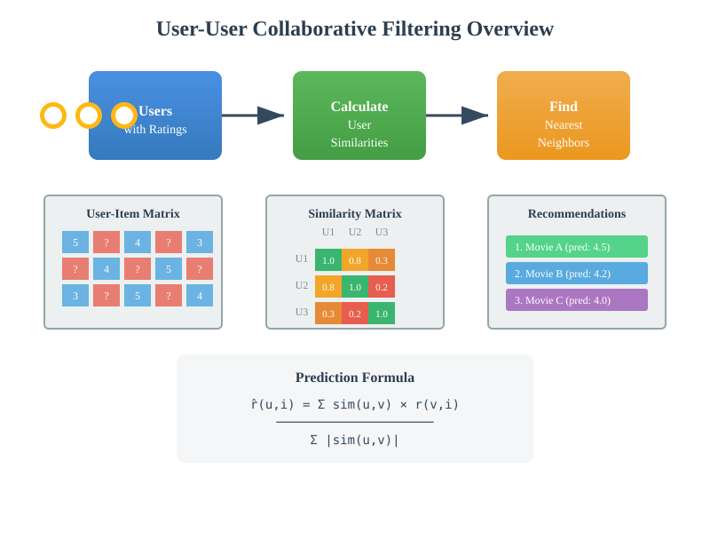
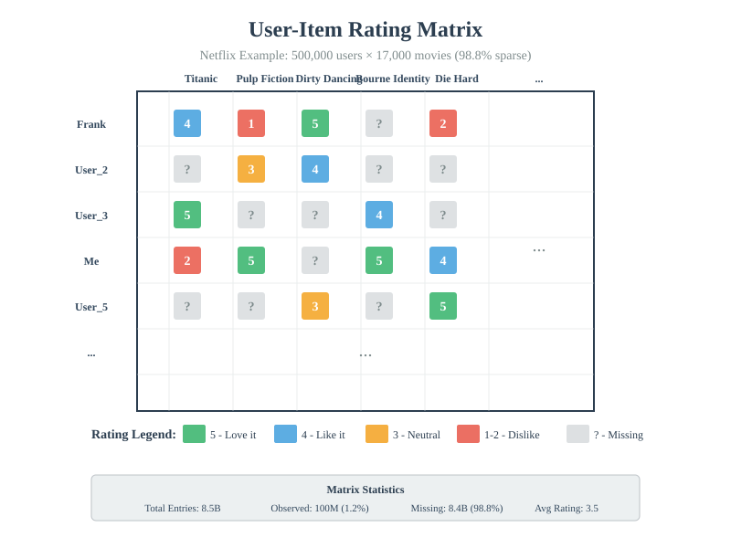
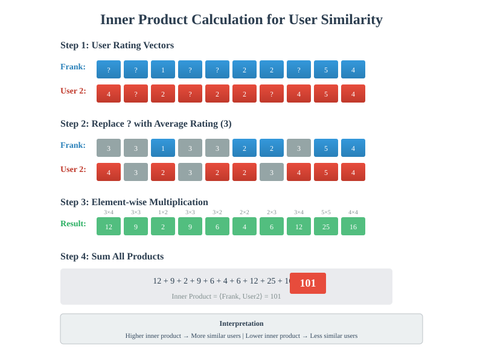
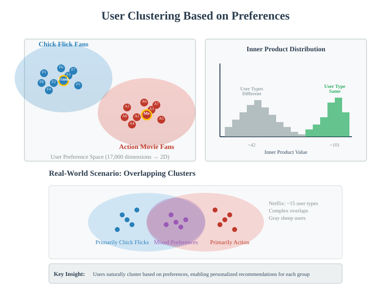
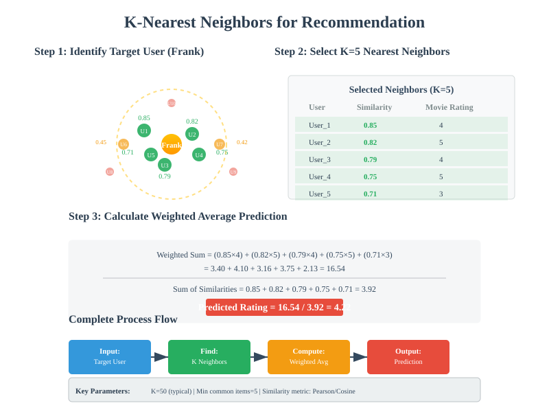

User-User Collaborative Filtering
Quick Navigation
- Introduction
- Problem Statement
- Mathematical Foundation
- User Similarity Metrics
- Nearest Neighbors Algorithm
- Implementation Examples
- Advantages and Limitations
- References & Further Reading
Introduction
User-User Collaborative Filtering is a fundamental recommendation system technique that leverages the wisdom of crowds to predict user preferences. This approach identifies users with similar taste patterns and uses their ratings to recommend items to each other.
Key Principles:
- Similarity-Based Predictions: Users with similar past behaviors likely have similar future preferences
- Neighborhood Formation: Groups of like-minded users form natural clusters
- Collaborative Intelligence: Aggregates knowledge from multiple users to overcome individual data sparsity
Real-World Applications:
- Netflix: Movie and TV show recommendations
- Amazon: Product recommendations based on purchase history
- Spotify: Music discovery through user listening patterns
- Yelp: Restaurant suggestions from users with similar tastes

Problem Statement
The recommendation problem can be formulated as a matrix completion task where we observe only a tiny fraction of all possible user-item interactions.
The User-Item Matrix:
R ∈ ℝ^(m×n)
Where:
- m = number of users (e.g., 500,000 for Netflix)
- n = number of items (e.g., 17,000 movies)
- R[i,j] = rating of item j by user i
- ? = missing values (98.8% in Netflix case)
Challenge Dimensions:
- Data Sparsity: Only 1.2% of entries observed in Netflix dataset
- Scale: 125 billion possible user pairs to consider
- Heterogeneity: Multiple user types with distinct preferences
- Noise: Rating fluctuations even among similar users

Mathematical Objective:
Given a sparse matrix R with observed entries Ω, predict missing entries:
minimize ||P_Ω(R - R̂)||_F^2
Where:
- R̂ = predicted complete matrix
- P_Ω = projection onto observed entries
- ||·||_F = Frobenius norm
Mathematical Foundation
Inner Product for Similarity
The core mathematical operation in user-based collaborative filtering is the inner product between user rating vectors.
Inner Product Definition:
For two user vectors u and v of length n:
⟨u, v⟩ = Σ(i=1 to n) u_i × v_i
Handling Missing Values:
When computing similarity with missing ratings:
- Mean Imputation: Replace missing values with average rating (e.g., 3.0)
- Intersection-Based: Only use commonly rated items
- Weighted Approaches: Account for rating variance

Similarity Metrics
Cosine Similarity:
sim(u, v) = ⟨u, v⟩ / (||u|| × ||v||)
Pearson Correlation:
sim(u, v) = Σ((u_i - ū)(v_i - v̄)) / √(Σ(u_i - ū)² × Σ(v_i - v̄)²)
Where:
- ū = mean rating for user u
- v̄ = mean rating for user v
Adjusted Cosine Similarity:
sim(u, v) = Σ((u_i - ī)(v_i - ī)) / √(Σ(u_i - ī)² × Σ(v_i - ī)²)
Where:
- ī = mean rating for item i across all users
User Similarity Metrics
Computing Pairwise Similarities
For a system with m users, we need to compute similarities for m(m-1)/2 unique pairs.
Computational Complexity:
- Time Complexity: O(m²n) for all pairs
- Space Complexity: O(m²) to store similarity matrix
- Optimization Strategies:
- Locality-Sensitive Hashing (LSH)
- Sampling-based approaches
- Distributed computation frameworks
Similarity Distribution Analysis
The distribution of user similarities reveals natural clustering patterns:
Bimodal Distribution Characteristics:
- High Similarity Peak: Users of the same type
- Low Similarity Peak: Users of different types
- Overlap Region: Users with mixed preferences
Statistical Properties:
μ_within ≈ 101 (same user type)
μ_between ≈ 42 (different user types)
σ ≈ 15 (standard deviation)

User Type Identification
Clustering Approaches:
- K-means: Partition users into k distinct groups
- Hierarchical Clustering: Build dendrogram of user relationships
- Spectral Clustering: Use eigenvalues of similarity matrix
- DBSCAN: Density-based clustering for irregular patterns
Nearest Neighbors Algorithm
Algorithm Steps
1. Similarity Computation:
def compute_similarity(user_a, user_b):
common_items = get_common_items(user_a, user_b)
if len(common_items) < min_common:
return 0
return pearson_correlation(
user_a[common_items],
user_b[common_items]
)
2. Neighborhood Selection:
def find_neighbors(target_user, k=50):
similarities = []
for other_user in all_users:
if other_user != target_user:
sim = compute_similarity(target_user, other_user)
similarities.append((other_user, sim))
return sorted(similarities, key=lambda x: x[1], reverse=True)[:k]
3. Rating Prediction:
def predict_rating(user, item, neighbors):
weighted_sum = 0
similarity_sum = 0
for neighbor, similarity in neighbors:
if item in neighbor.ratings:
weighted_sum += similarity * neighbor.ratings[item]
similarity_sum += abs(similarity)
if similarity_sum > 0:
return weighted_sum / similarity_sum
else:
return global_mean_rating

Optimization Techniques
Neighborhood Size Selection:
- Fixed-k: Use top-k most similar users
- Threshold-based: Include users with similarity > θ
- Adaptive: Vary k based on item popularity
Similarity Caching:
- Pre-computation: Calculate all similarities offline
- Incremental Updates: Update only affected similarities
- Approximate Methods: Use sketching techniques
Implementation Examples
Python Implementation with NumPy
import numpy as np
from scipy.spatial.distance import cosine
from scipy.stats import pearsonr
class UserBasedCF:
def __init__(self, ratings_matrix, k_neighbors=50):
self.ratings = ratings_matrix
self.k = k_neighbors
self.user_similarities = {}
def compute_similarities(self):
n_users = self.ratings.shape[0]
for i in range(n_users):
for j in range(i+1, n_users):
# Find commonly rated items
mask = ~np.isnan(self.ratings[i]) & ~np.isnan(self.ratings[j])
if mask.sum() >= 5: # Minimum common items
sim = pearsonr(self.ratings[i][mask],
self.ratings[j][mask])[0]
self.user_similarities[(i,j)] = sim
self.user_similarities[(j,i)] = sim
def predict(self, user_id, item_id):
# Get k nearest neighbors who rated this item
neighbors = []
for other_user in range(self.ratings.shape[0]):
if other_user != user_id and not np.isnan(self.ratings[other_user, item_id]):
sim = self.user_similarities.get((user_id, other_user), 0)
neighbors.append((other_user, sim))
# Sort by similarity and take top k
neighbors = sorted(neighbors, key=lambda x: x[1], reverse=True)[:self.k]
# Weighted average
if neighbors:
weighted_sum = sum(sim * self.ratings[uid, item_id]
for uid, sim in neighbors)
sim_sum = sum(abs(sim) for _, sim in neighbors)
return weighted_sum / sim_sum if sim_sum > 0 else np.nanmean(self.ratings)
return np.nanmean(self.ratings)
Handling Large-Scale Data
Distributed Computing with PySpark:
from pyspark.sql import SparkSession
from pyspark.ml.recommendation import ALS
from pyspark.sql.functions import col, avg
# Initialize Spark
spark = SparkSession.builder \
.appName("UserBasedCF") \
.config("spark.sql.crossJoin.enabled", "true") \
.getOrCreate()
# Load ratings data
ratings_df = spark.read.csv("ratings.csv", header=True, inferSchema=True)
# Compute user similarities using Spark SQL
user_vectors = ratings_df.groupBy("userId").pivot("itemId").agg(avg("rating"))
similarities = user_vectors.alias("u1").crossJoin(user_vectors.alias("u2")) \
.filter(col("u1.userId") < col("u2.userId"))
# Further processing...
🔬 Google Colab Integration

Quick Start Notebook:
# Install required packages
!pip install numpy scipy pandas scikit-learn
# Load sample dataset
import pandas as pd
url = "https://files.grouplens.org/datasets/movielens/ml-100k.zip"
# Implementation continues...
Advantages and Limitations
Advantages
Strengths of User-Based Collaborative Filtering:
- Intuitive Interpretation: "Users like you also liked..."
- No Content Analysis: Works without item features
- Serendipity: Can recommend diverse items
- Proven Effectiveness: Successful in many domains
Limitations
Challenges and Drawbacks:
- Cold Start Problem:
- New users have no rating history
-
New items have no user feedback
-
Sparsity Issues:
- Most user pairs have few common ratings
-
Similarity calculations become unreliable
-
Scalability Concerns:
- O(m²) similarity computations
-
Real-time predictions can be slow
-
Gray Sheep Problem:
- Users with unusual tastes poorly served
- Niche preferences underrepresented
Comparison with Item-Based CF
User-Based vs Item-Based:
| Aspect | User-Based CF | Item-Based CF |
|---|---|---|
| Similarity Focus | User preferences | Item characteristics |
| Scalability | Poor for many users | Better for many items |
| Stability | Changes frequently | More stable |
| Explanation | "Users like you" | "Because you liked X" |
| Cold Start | Better for new items | Better for new users |
Modern Enhancements
Hybrid Approaches:
- Matrix Factorization: Combine with latent factor models
- Deep Learning: Neural collaborative filtering
- Context-Aware: Include temporal and situational factors
- Cross-Domain: Transfer learning across datasets
References & Further Reading
📚 Academic Papers
- Collaborative Filtering for Implicit Feedback Datasets - Hu, Koren, and Volinsky (2008)
- Amazon.com Recommendations: Item-to-Item Collaborative Filtering - Linden et al. (2003)
- The Netflix Prize - Bennett and Lanning (2007)
- Empirical Analysis of Predictive Algorithms for Collaborative Filtering - Breese et al. (1998)
🤗 Hugging Face Models
- RecSys Transformers - Transformer-based recommendation models
- Neural Collaborative Filtering - Deep learning approaches
📖 Additional Resources
- Recommender Systems Handbook - Comprehensive reference
- Google's Recommendation Systems Course - Free online course
- MovieLens Datasets - Benchmark datasets for testing
- Surprise Library Documentation - Python library for recommender systems